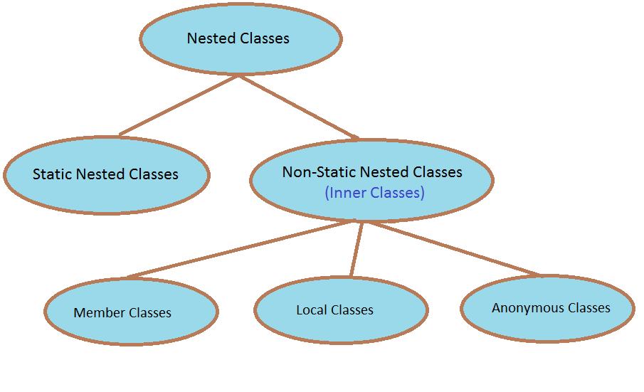
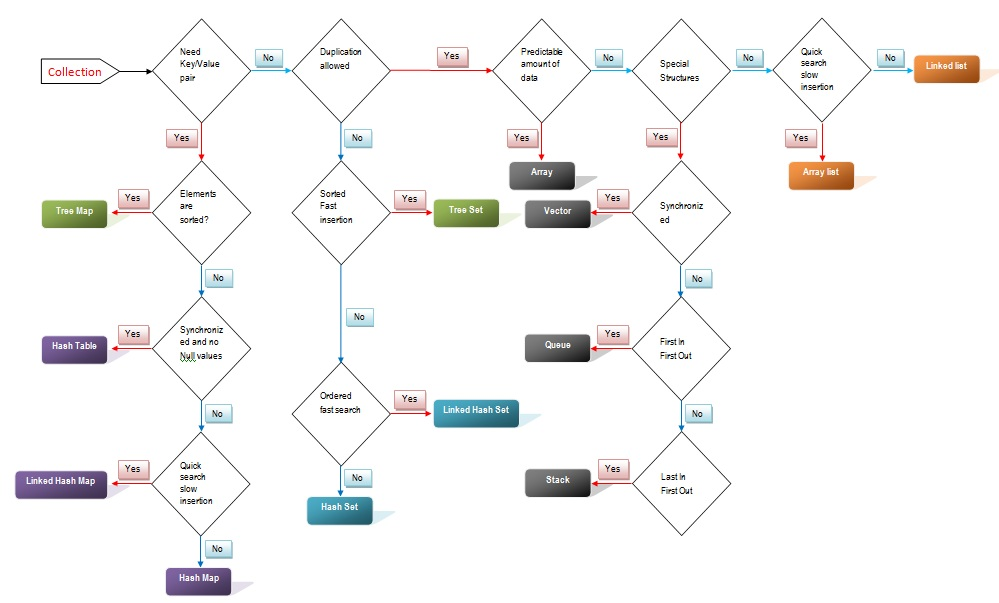

Abstract methods have to be overridden for the abstract class to be instantiable.
They are similar to abstract classes but have no methods's body. Classes are said to "implement" an interface (it's kind of the same way objects are instantiated from classes).
Java does not support multiple inheritance, but a class can implement multiple interfaces.
A variable of primitive data type is passed by value, not by reference.
A wrapper class is used to wrap the data in a new object which contains the value of that variable to pass it by reference.
A wrapper class is available by default for each primitive types:
Constructors are permissive and allow to create objects from Strings. They also provide methods to convert objects into one another.
Autoboxing and unboxing refers to an implicit call to the constructor and auto unboxing to an implicit call to the *value() method.
Those are just classes declared in other classes.
Those are nested class that are static. It is only a way to group and encapsulate classes together.
An inner class is a nested class which is not static. It's use is restricted inside the class in which it is declared. If you need to use objects of a kind that you do not want to mix with other classes, inner classes are a good way to protect them.
It's just a one-time on-the-fly declaration and instanciation of a class. It can be useful to prevent memory from being reserved for a class that would be used only once. It is an inner class.
A String object is immutable, but we can redefine the variable.
Concatenation creates another string object in memory so memory comsuption doubles with each concatenation. One must be prudent.
The StringBuffer class contains many methods that work on the original string.
StringBuilder basically proposes the same methods but is not thread-safe so there are concurency problems, StringBuffer must be used when dealing with multiple users.
This is used to break a string into pieces so that information contained in it can be retrieved and processed. For exemple it can be used to read individual word form a string.
The File class is used to obtain file properties, rename file, delete file. It cat encapsualets the properties of a file but doesn't contains methods for I/O. For that we use FileWriter and FileReader. In the same way, a PrintWriter class exists that is more powerful than the FileWriter one.
The Scanner class can be used to read a file, it provides ways to read integers directly and to set delimiters.
RTFMThe serialization is a process in which a data structure such as an object is transformed into a representation (generaly textual) of this object so that it can be stored or transfered.
For example, if we have an object that we want to be able to keep intact from one instance of the program to the other, we can serialize it (getting a representation in return) and write this representation to a file. Next time we launch the program, we read the file, apply the inverse transformation to get the object from the representation and be able to use it as before.
It is also often used to transfer an object between two programms, for example in a multiplayer game you might want to send an object from a computer to the other. Serialization allows you to send its representation and get the object back at the other end of the link.
There are many communication formats, for example json, yaml, messagepack or pickle. In java, the serialization is handled automatically by implementing the java.io.Serializable interface. It is convenient to use when dealing with java only but not compatible with other programming languages.
A thread is a flow of instructions from beginning to end in a program.
Multithreading makes your program more responsive and interactive, enhancing performance. However, it increases program complexity and can be the source of many bugs.
Threads can communicate through the Thread class. See the Thread class.
A thread group is a set of threads. See the ThreadGroup class.
A collection is a standart implementation of a data structure in java. There are collections for linked-lists, FIFO, LIFO, hash-maps and more. If you are going to use such a data structure you really should use the standard implementation that will be more reliable and optimized.
 RETURN